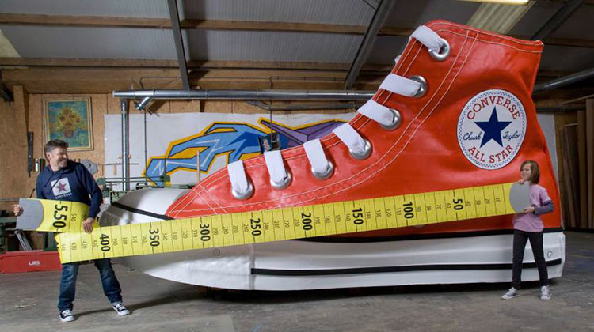
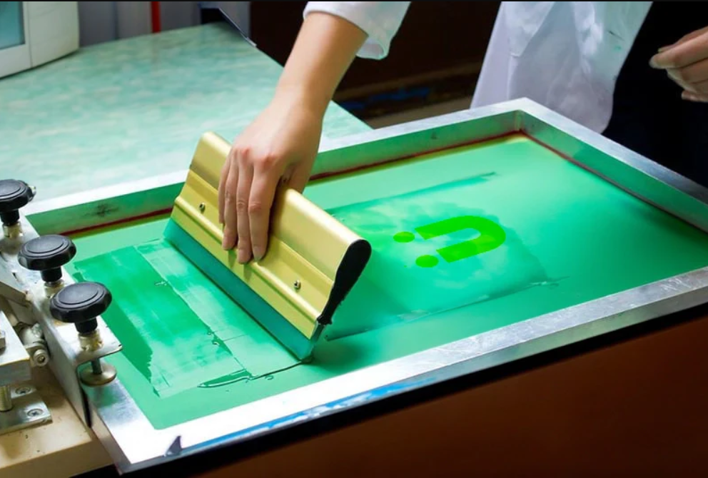

Servicio de Vulcanizado

Hace ya 15 años que la fabrica cuenta con un servicio de vulcanizado de bases, tacos, partes de goma de ciertos repuestos al tener las maquinas necesarias para su producción y un ingeniero químico para realizar la mezcla de materiales necesarios para obtener un muy buen material de trabajo, sea caucho o gomas PU.
Talles Especiales a Medida
Si bien la fabrica cuenta con un amplio catalogo de talles, desde el 35 al 45, se realizan talles especiales a medida (hasta 50), tanto para calzado de hombre como de mujer, (solo en modelos de zapatillas) . No dude en consultar.
Taller de Serigrafía
La fabrica cuenta con un taller de serigrafía, donde se pueden estampar logos, nombres o cualquier diseño que se desee en el calzado, ya sea en los borcegos, zapatillas o zapatos. Se utilizan tintas de alta calidad, que garantizan una buena durabilidad y resistencia al desgaste. Ideal para empresas que desean personalizar el calzado de sus empleados.